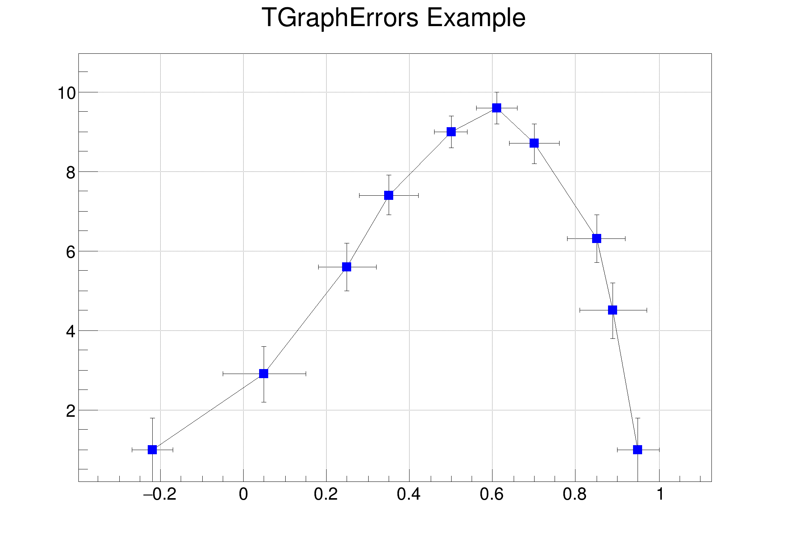

A Simple Graph with error bars
A Simple Graph with error bars

from ROOT import TCanvas, TGraphErrors
from ROOT import gROOT
from array import array
c1 =
TCanvas(
'c1',
'A Simple Graph with error bars', 200, 10, 700, 500 )
c1.SetGrid()
n = 10;
x = array( 'f', [ -0.22, 0.05, 0.25, 0.35, 0.5, 0.61, 0.7, 0.85, 0.89, 0.95 ] )
ex = array( 'f', [ 0.05, 0.1, 0.07, 0.07, 0.04, 0.05, 0.06, 0.07, 0.08, 0.05 ] )
y = array( 'f', [ 1, 2.9, 5.6, 7.4, 9.0, 9.6, 8.7, 6.3, 4.5, 1 ] )
ey = array( 'f', [ 0.8, 0.7, 0.6, 0.5, 0.4, 0.4, 0.5, 0.6, 0.7, 0.8 ] )
gr.SetTitle( 'TGraphErrors Example' )
gr.SetMarkerColor( 4 )
gr.SetMarkerStyle( 21 )
gr.Draw( 'ALP' )
c1.Update()
- Author
- Wim Lavrijsen
Definition in file gerrors.py.

 ROOT 6.18/03 - Reference Guide Generated on Thu Aug 29 2019 04:10:22 (GVA Time) using Doxygen 1.8.14.
ROOT 6.18/03 - Reference Guide Generated on Thu Aug 29 2019 04:10:22 (GVA Time) using Doxygen 1.8.14.